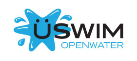

Our weekly programme is suspended during lockdown and Tier 4.
We are providing online training during this period. Please see mailing list and Facebook for details.
All members are encouraged to follow our
Facebook group for details of events organised during this period.
Monday
Juniors Run/bike session: 19 - 20.45
• Younger age group 19.00 - 20.15 Tristart and Tristar 1 ages (10 or under on 31.12.20 and min age 7)
• Older age group 19.00 - 20.40 Tristar 2, Tristar 3 and Youth (ages 11 to 16 on 31.12.20)
Senior run session/strength and conditioning/spin session
Leverhulme Park Leisure Centre (BL2 6EB)
-------------------------------------------------------------------
Tuesday
Senior Swim: 20.00 - 21.15
Turton Sports Centre (BL7 9LS)
Open Water Swimming: 17.00 - 20.00
Elton Reservoir - mid May to End of August
Directions to Elton Sailing Club.
If travelling down Bolton Road (A58) towards Bury turn right at Wellington Pub into Kitchener Street, signposted Elton Reservoir and Alpha Hospital.
At end of Kitchener St turn right into Buller Street. Turn left over a small bridge signposted Alpha Hospital. Once over bridge bear right and down lane to Sailing Club.
Don't rely on a sat nav, it will take you towards the reservoir from the wrong side along a lane which
has a locked barrier
-------------------------------------------------------------------
Wednesday
Senior track session: 19.00 - 20.00
Leverhulme Park Leisure Centre (BL2 6EB)
Open Water Swimming: 17.30 - 20.00
Dock 9 Salford Quays
BTC are also tri club partners with U swim who organise swims at Dock 9 Salford Quays. Go to uswimopenwater for details

-------------------------------------------------------------------
Thursday
BMSS/BTC Early Swim: 5.30 - 7.00am
Farnworth Pool (BL4 9DZ)
Junior Swim Session (intermediate and advanced): 19.45 - 21.00
Smithills Pool (BL1 6JS)
Senior swim: 19.30 - 20.30
Bolton One -Jason Kenny Centre (BL3 5BN)
(For this session you must be able to swim 200m front crawl comfortably without a break)
-------------------------------------------------------------------
Friday
Junior and Senior Bike session: 19.00 - 20.15
(late spring and summer only tbc)
Leverhulme Park Leisure Centre (BL2 6EB)
-------------------------------------------------------------------
Saturday
Junior Swim session: 15.00 - 16.00
Farnworth Leisure Centre (BL4 9DZ)
Senior Swim session: 16.00 - 17.30
Farnworth Leisure Centre (BL4 9DZ)
(this includes instruction for those learning front crawl)
Senior Swim session: 15.00 - 16.30
Horwich Leisure Centre (BL6 5PY)
Open Water Swimming: 8.00 - 11.00am
Dock 9 Salford Quays
BTC are also tri club partners with U swim who organise swims at Dock 9 Salford Quays. Go to uswimopenwater for details
Saturday (am)
Steady group run 10K+
No one gets dropped. Routes and start times vary. Watch BTC facebook page and Strava page -
-------------------------------------------------------------------
Sunday (am)
Bolton Tri Club bike rides